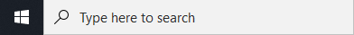

Tässä osiossa tutustumme siihen, mitä ohjelmointi ja ohjelmoinnillinen tapa ajatella on. Lisäksi asennamme tietokoneelle tarvittavat ohjelmistot materiaalin suorittamista varten. Kirjoitamme myös ihka-ensimmäisen ohjelmakoodin.
Ohjelmoinnillinen ajattelu on tapa ajatella ja ohjelmointi voidaan nähdä tapana kertoa omasta ajattelustaan. Maailma mullistuu jatkuvalla vauhdilla ja on vaikea keksiä ammatteja tai toimialoja, joissa tietokoneita ei hyödynnettäisi toiminnassa lainkaan. Autot sisältävät järkyttävän määrän ohjelmoituja elementtejä ja ovat ikään kuin pieniä robotteja, liikunnan ja urheilun saralla mittarit mittaavat ja analysoivat meitä jatkuvasti ja yhteiskuntamme ulottuu pitkälti täysin sosiaalisen median verkostoihin. Listaa voisi jatkaa ikuisuuksiin, mutta se ei ole järkevää. Järkevää on pureutua siihen, miten voimme tätä tietoyhteiskuntaa pyrkiä ymmärtämään. Miksi kirjautuessamme sisään ohjelma tietää, että kyseessä oleva henkilö on juuri sinä? Kuinka tietokone osaa hakea jatkuvasti sähköpostiviestejä postilaatikkoon? Mitä kaikkea oikein "konepellin" alla tapahtuukaan?
Kaikki nämä edellä mainitut tapaukset sisältävät ohjelmakoodia. Ohjelmointia on kaikkialla ja sitä ei käy kieltäminen. Ohjelmoinnillinen ajattelu ja ohjelmointi ovat kuitenkin paljon laajempia käsitteitä, kuin "koodaus". Ohjelmoinnillisella ajattelulla yhdistetään tietokoneen "voima" arkipäivän pulmiin. Ohjelmoinnillisesti ajatteleva henkilö osaa valjastaa uudenlaiset tietokoneen tuomat työkalut eri alojen avuksi, niin että ongelmia ratkastaan entistä tehokkaammin ja varmemmin.
Myös ohjelmointi kattaa paljon enemmän, kuin koodaamisen ja sitä tulemme tässä materiaalissa harjoittelemaan. Ohjelmointi on pyrkimystä ymmärtää, miten asiat tehdään kun taas koodaus on sitä asioiden tekemistä. Voisi ajatella, että ohjelmointi on ajatustyötä, kun taas koodaaminen on ainoastaan ajatusten kirjaamista ylös.
Ohjelmakoodia voi kirjoittaa vaikka vihkoon lyijykynällä tai PowerPoint-esitelmän muistiinpanoihin. Tämä ei ole kuitenkaan kovin mielekästä, sillä emme pysty "ajamaan" eli suorittamaan koodia mitenkään. Voimme ainoastaan tarkastella koodin logiikkaa ajatuksen tasolla. Tietokoneelle nämä koodinpätkät eivät kuitenkaan merkitse mitään. On yhtä mielekästä tehdä Taiwanin pääkaupungissa Taipeissa ravintolatilaus suomeksi ja odottaa, että tarjoilija toimii ohjeiden mukaan. Molemmissa tilanteissa tarvitaan tulkkia, jotain välikappaletta, joka osaa kertoa tarpeemme eteenpäin.
Aloitetaan urakka siis asentamalla Python-tulkki. Tarvitsemme tätä siksi, että tietokoneemme ymmärtäisi koodiamme. Tietokone ymmärtää, että "puhumme Pythonia" ja tietää toimia käskyjemme mukaan. Asennusta varten seuraa ohjeita:
Onnistuiko? Kokeile avata komentokehote eli "CMD" kirjoittamalla "cmd" hakukenttään . Kun komentokehote aukeaa, kokeile syöttää kehotteelle python --version. Jos vastaus ei ole mikään error, niin kaiken pitäisi pelittää!
Toinen tärkeä osa ohjelmointiurakkaa on kunnollinen tekstieditori. Vaikka voisimme edelleen kirjoittaa ohjelmakoodia tietokoneelta löytyvään tekstieditoriin esimerkiksi Microsoft Wordiin tai notepadiin, tekee ohjelmointiin tarkoitettu tekstieditori työstä huomattavasti helpompaa. Se esimerkiksi tunnistaa ohjelmoinnille oleellisia sanoja ja värikoodaa niitä, jotta kirjoittamamme ohjelmakoodi olisi selkeämpää. Se on myös tarpeeksi älykäs ja huomaa usein virheet ennen meitä, jolloin säästymme turhalta työltä. Eron kunnollisen tekstieditorin ja tavallisen muistion kanssa huomaa helposti:
Tekstieditoriksi suosittelen tätä kokonaisuutta varten yllä näkyvää Visual Studio Codea. Se on kattava, mutta samalla kevyt tekstieditori. Ohjeet tekstieditorin asentamiseen:
Jos suoritit kaikki stepit tarkasti tulisi Visual Studio Coden käynnistyä. (Voit suorittaa "Get Started" -tutoriaalin, mutta tulemme harjoittelemaan yhdessä ohjelman käyttöä "Tehtävät" -sivulla.)
Saadaksemme kaiken ilon irti tekstieditorista on siihen hyvä myös lisätä laajennus (extension). Tekstieditoria voi käyttää monien eri ohjelmointikielien kanssa ja siksi laajennuksen avulla voimme selittää tekstieditorille, että nyt kyseessä on Python-koodia. Visual Studio Codesta löytyy laajennus Pythonia varten. Emme ehkä ymmärrä laajennuksien merkitystä kattavasti ihan vielä, mutta ajan kanssa ne tekevät koodamisesta huomattavasti vaivattomampaa. Ohjeet laajennuksen asentamiseen:
Miten meni?